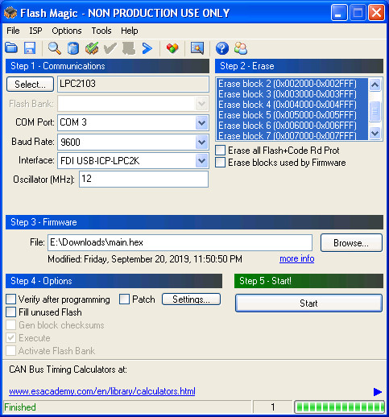
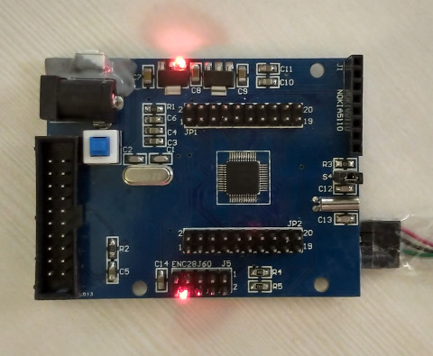

LPC2103
LED測試程式
main.s
.text .align 2 .global _start _start: bal reset _undef: bal . _swi: bal . _prefetch_abort: bal . _data_abort: bal . _reserved: bal . _irq: bal . bal . reset: ldr r1, =PINSEL0 ldr r2, =0x00000000 str r2, [r1] ldr r1, =IODIR ldr r2, =0x00008000 str r2, [r1] loop: ldr r0, =IOCLR ldr r1, =0x00008000 str r1, [r0,#0x00] ldr r4, =100000 1: nop subs r4, r4, #1 bne 1b ldr r0, =IOSET ldr r1, =0x00008000 str r1, [r0, #0x00] ldr r4, =100000 1: nop subs r4, r4, #1 bne 1b bal loop .end
main.ld
MEMORY {
flash : ORIGIN = 0, LENGTH = 120K
ram : ORIGIN = 0x40000000, LENGTH = 64K
}
__stack_end__ = 0x40000000 + 64K - 4;
SECTIONS {
. = 0;
startup : { *(.startup)} >flash
prog : {
*(.text)
*(.rodata)
*(.rodata*)
*(.glue_7)
*(.glue_7t)
} >flash
__end_of_text__ = .;
.data : {
__data_beg__ = .;
__data_beg_src__ = __end_of_text__;
*(.data)
__data_end__ = .;
} >ram AT>flash
.bss : {
__bss_beg__ = .;
*(.bss)
} >ram
. = ALIGN(32 / 8);
}
. = ALIGN(32 / 8);
_end = .;
_bss_end__ = . ; __bss_end__ = . ; __end__ = . ;
PROVIDE(end = .);
PROVIDE(undefined_instruction_exception = endless_loop);
PROVIDE(software_interrupt_exception = endless_loop);
PROVIDE(prefetch_abort_exception = endless_loop);
PROVIDE(data_abort_exception = endless_loop);
PROVIDE(reserved_exception = endless_loop);
PROVIDE(interrupt_exception = endless_loop);
PROVIDE(fast_interrupt_exception = endless_loop);
PROVIDE(IOPIN = 0xe0028000);
PROVIDE(IODIR = 0xE0028008);
PROVIDE(IOCLR = 0xE002800C);
PROVIDE(IOSET = 0xE0028004);
PROVIDE(U0RBR = 0xE000C000);
PROVIDE(U0THR = 0xE000C000);
PROVIDE(U0IER = 0xE000C004);
PROVIDE(U0IIR = 0xE000C008);
PROVIDE(U0FCR = 0xE000C008);
PROVIDE(U0LCR = 0xE000C00C);
PROVIDE(U0LSR = 0xE000C014);
PROVIDE(U0SCR = 0xE000C01C);
PROVIDE(U0DLL = 0xE000C000);
PROVIDE(U0DLM = 0xE000C004);
PROVIDE(PLLCON = 0xE01FC080);
PROVIDE(PLLCFG = 0xE01FC084);
PROVIDE(PLLSTAT = 0xE01FC088);
PROVIDE(PLLFEED = 0xE01FC08C);
PROVIDE(MAMCR = 0xE01FC000);
PROVIDE(MAMTIM = 0xE01FC004);
PROVIDE(VPBDIV = 0xE01FC100);
PROVIDE(T0IR = 0xE0004000);
PROVIDE(T0TCR = 0xE0004004);
PROVIDE(T0TC = 0xE0004008);
PROVIDE(T0PR = 0xE000400C);
PROVIDE(T0PC = 0xE0004010);
PROVIDE(T0MCR = 0xE0004014);
PROVIDE(T0MR0 = 0xE0004018);
PROVIDE(T0MR1 = 0xE000401C);
PROVIDE(T0MR2 = 0xE0004020);
PROVIDE(T0MR3 = 0xE0004024);
PROVIDE(T0CCR = 0xE0004028);
PROVIDE(T0CR0 = 0xE000402C);
PROVIDE(T0CR1 = 0xE0004030);
PROVIDE(T0CR2 = 0xE0004034);
PROVIDE(T0EMR = 0xE000403C);
PROVIDE(PINSEL0 = 0xe002c000);
PROVIDE(PINSEL1 = 0xe002c004);
Makefile
all: arm-none-eabi-as -ggdb -mcpu=arm7 -o main.o main.s arm-none-eabi-ld -T main.ld -o main.elf main.o arm-none-eabi-objcopy -O ihex main.elf main.ihx packihx main.ihx > main.hex clean: rm -rf main.ihx main.hex main.o main.elf
使用Flash Magic燒錄，步驟如下：
1. Power off
2. 按住ISP按鈕
3. Flash Magic按下Start
4. Power on

完成
